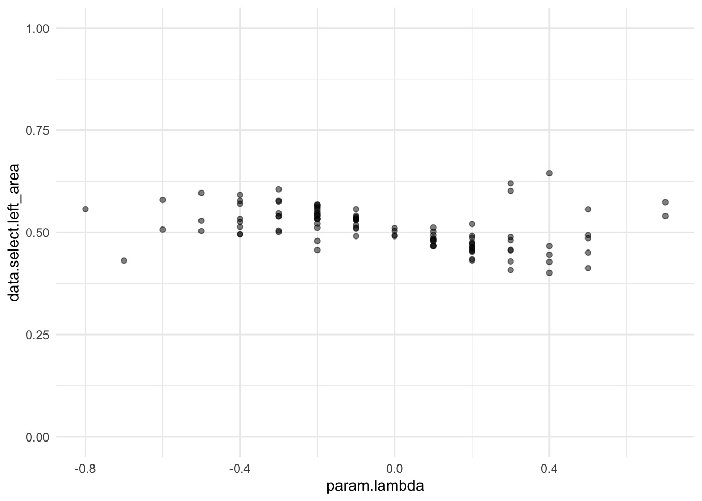
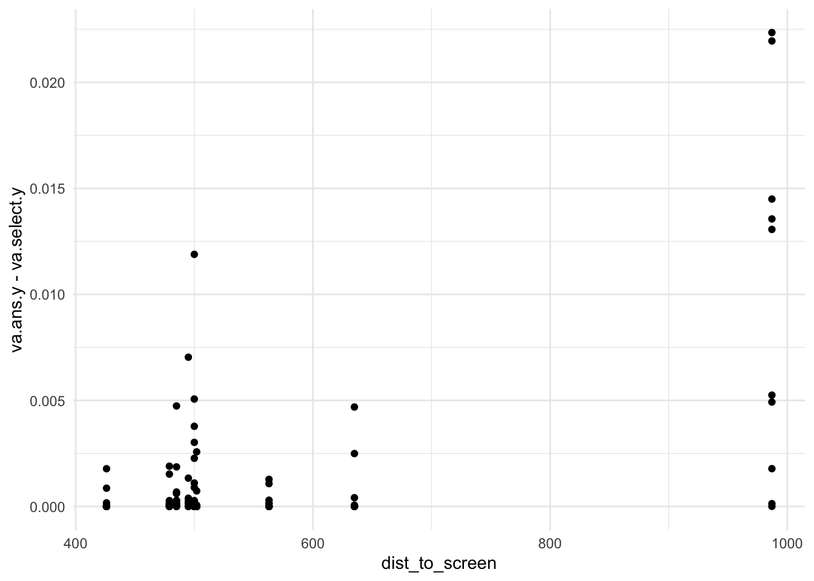
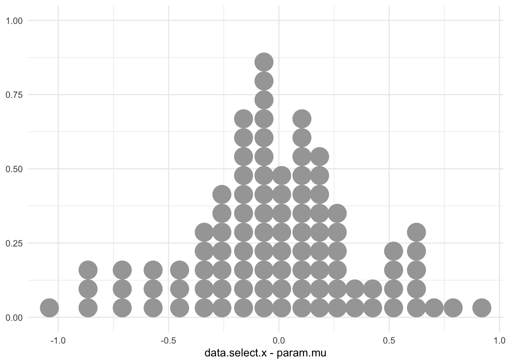
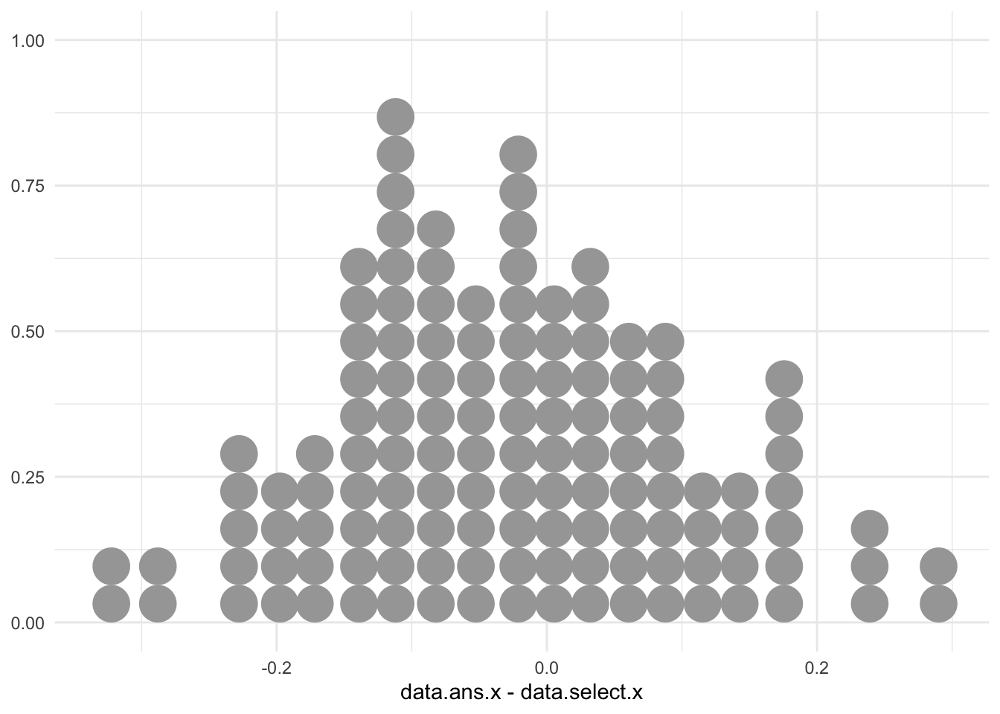
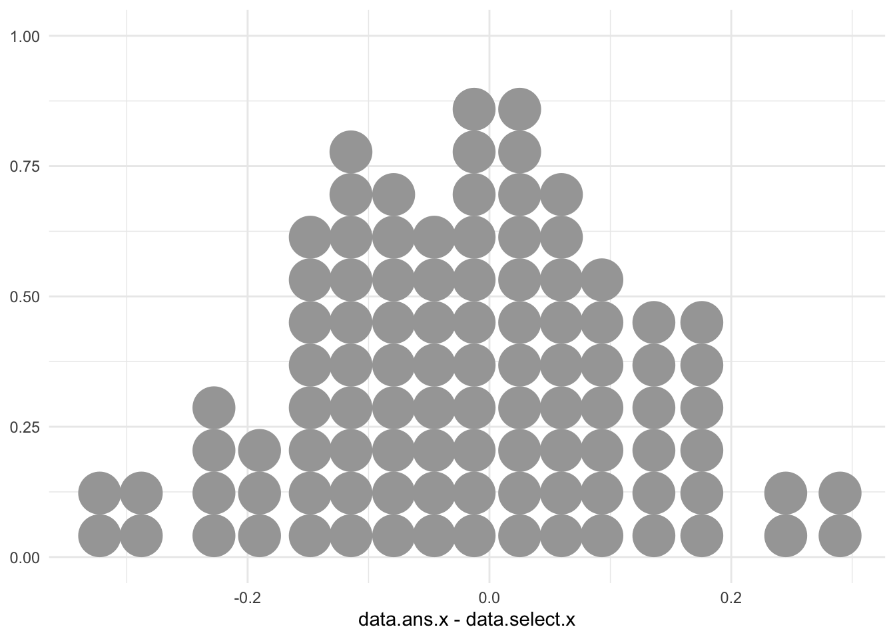
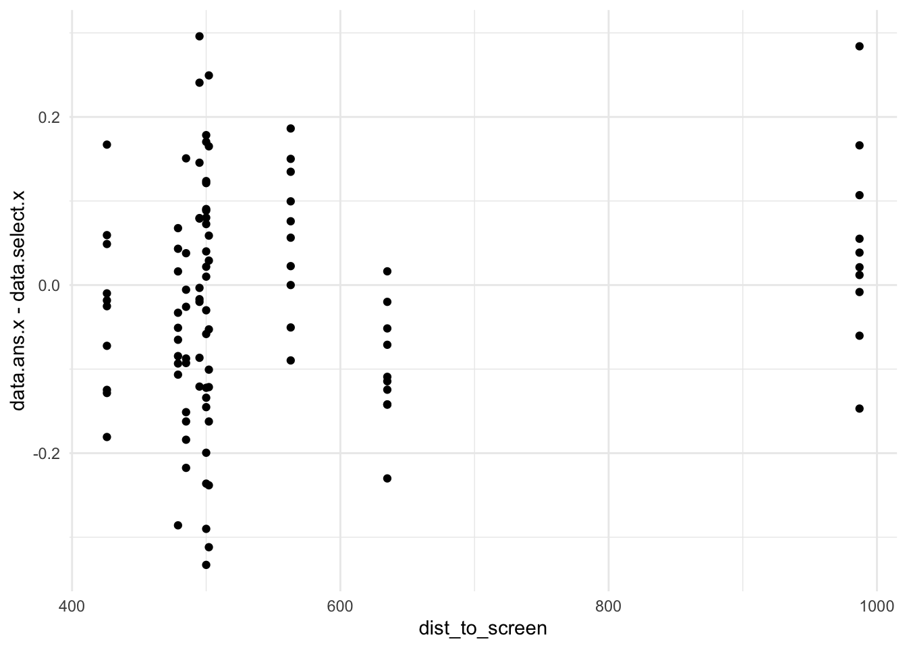
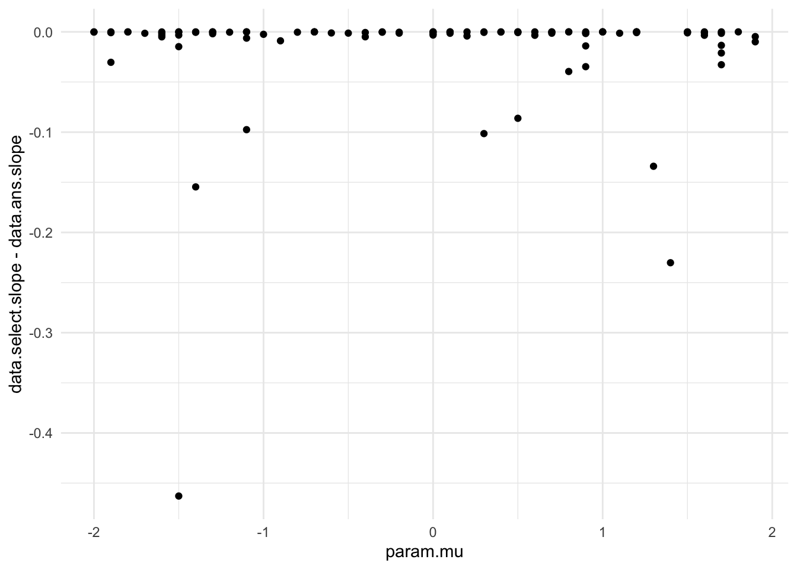
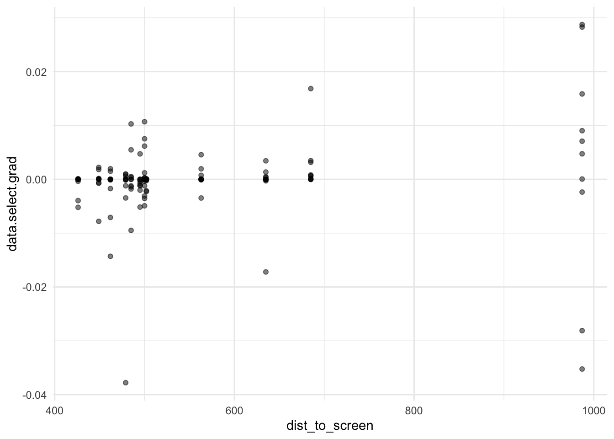

Here’s some notes on whether to use offset() in this case.
Let’s first get a sense of what the parameters and priors look like:
# specify formula f <-bf(error_va ~1+ (1| participantId), sigma ~log(va.ans.y) + (1| participantId) )# get prior task5_df %>%mutate(error_va = va.select.x - va.ans.x) %>%get_prior(formula = f, data = .)
# specify prior p <-c(# global intercept (mu_0)prior(normal(0, 5), class ="Intercept"), # sd of participant mean (sigma_0)prior(cauchy(0, 2), class ="sd", group ="participantId"), # mu_gamma prior(normal(0, 1), class ="Intercept", dpar ="sigma"), # beta prior(normal(1, 0.5), class ="b", coef="logva.ans.y", dpar ="sigma"), # gamma prior(cauchy(0, 1), class ="sd", group ="participantId", dpar ="sigma"))
Family: gaussian
Links: mu = identity; sigma = log
Formula: error_phy ~ 1 + (1 | participantId)
sigma ~ 1 + offset(log(phy.ans.y) + log(dist_to_screen)) + (1 | participantId)
Data: . (Number of observations: 128)
Draws: 4 chains, each with iter = 6000; warmup = 1000; thin = 1;
total post-warmup draws = 20000
Multilevel Hyperparameters:
~participantId (Number of levels: 13)
Estimate Est.Error l-95% CI u-95% CI Rhat Bulk_ESS Tail_ESS
sd(Intercept) 0.30 0.09 0.16 0.51 1.00 5726 8786
sd(sigma_Intercept) 0.77 0.20 0.47 1.25 1.00 4897 7580
Regression Coefficients:
Estimate Est.Error l-95% CI u-95% CI Rhat Bulk_ESS Tail_ESS
Intercept 0.25 0.10 0.06 0.46 1.00 5408 7449
sigma_Intercept -10.66 0.23 -11.12 -10.19 1.00 3567 6805
Draws were sampled using sampling(NUTS). For each parameter, Bulk_ESS
and Tail_ESS are effective sample size measures, and Rhat is the potential
scale reduction factor on split chains (at convergence, Rhat = 1).
summary(m5.2.2.x)
Family: gaussian
Links: mu = identity; sigma = log
Formula: error_phy ~ 1 + (1 | participantId)
sigma ~ 1 + offset(log(phy.ans.y + dist_to_screen)) + (1 | participantId)
Data: . (Number of observations: 128)
Draws: 4 chains, each with iter = 6000; warmup = 1000; thin = 1;
total post-warmup draws = 20000
Multilevel Hyperparameters:
~participantId (Number of levels: 13)
Estimate Est.Error l-95% CI u-95% CI Rhat Bulk_ESS Tail_ESS
sd(Intercept) 0.31 0.10 0.13 0.54 1.00 4787 5385
sd(sigma_Intercept) 0.53 0.17 0.26 0.91 1.00 4292 6614
Regression Coefficients:
Estimate Est.Error l-95% CI u-95% CI Rhat Bulk_ESS Tail_ESS
Intercept 0.37 0.10 0.17 0.58 1.00 6248 9258
sigma_Intercept -6.94 0.18 -7.30 -6.60 1.00 5074 7580
Draws were sampled using sampling(NUTS). For each parameter, Bulk_ESS
and Tail_ESS are effective sample size measures, and Rhat is the potential
scale reduction factor on split chains (at convergence, Rhat = 1).
summary(m5.2.3.x)
Warning: Parts of the model have not converged (some Rhats are > 1.05). Be
careful when analysing the results! We recommend running more iterations and/or
setting stronger priors.
Family: gaussian
Links: mu = identity; sigma = log
Formula: error_phy ~ dist_to_screen * eta
eta ~ 1 + (1 | participantId)
sigma ~ 1 + offset(log(phy.ans.y)) + (1 | participantId)
Data: . (Number of observations: 128)
Draws: 4 chains, each with iter = 6000; warmup = 1000; thin = 1;
total post-warmup draws = 20000
Multilevel Hyperparameters:
~participantId (Number of levels: 13)
Estimate Est.Error l-95% CI u-95% CI Rhat Bulk_ESS Tail_ESS
sd(sigma_Intercept) 0.66 0.24 0.32 1.20 1.23 12 15
sd(eta_Intercept) 0.00 0.00 0.00 0.00 1.04 71 86
Regression Coefficients:
Estimate Est.Error l-95% CI u-95% CI Rhat Bulk_ESS Tail_ESS
sigma_Intercept -4.29 0.22 -4.71 -3.79 1.16 18 98
eta_Intercept 0.00 0.00 0.00 0.00 1.08 44 710
Draws were sampled using sampling(NUTS). For each parameter, Bulk_ESS
and Tail_ESS are effective sample size measures, and Rhat is the potential
scale reduction factor on split chains (at convergence, Rhat = 1).
This looks very similar to the trend we had before.
Comparing model 1 and 2
Let’s compare the two:
# first we add the loo criterion to existing models # m5.1.x <- add_criterion(m5.1.x, "loo", moment_match=TRUE, recompile=TRUE)m5.2.1.x <-add_criterion(m5.2.1.x, "loo", moment_match =TRUE, recompile=TRUE)
Recompiling the model with 'rstan'
Recompilation done
Automatically saving the model object in 'models/m5.2.1.x.rds'
Relationship between signed error and distance to x-axes (in visual angle space):
Code
task5_df %>%ggplot(aes(x = va.ans.x, y = va.select.y - va.ans.y)) +geom_point(alpha =0.5) +geom_hline(yintercept =0, linetype="dashed", color="gray") +labs(title ="Task 5 - Project from dot to Y-Axes - Visual Angle")
We apply the same approach, fit two models, and compare them.
Model 1 – Vis Angle
f <-bf(error_va ~1+ (1| participantId), sigma ~log(va.ans.x) + (1| participantId))# get prior task5_df %>%mutate(error_va = va.select.x - va.ans.x) %>%get_prior(formula = f, data = .)
# specify prior p <-c(# global intercept (mu_0)prior(normal(0, 5), class ="Intercept"), # sd of participant mean (sigma_0)prior(cauchy(0, 2), class ="sd", group ="participantId"), # mu_gamma prior(normal(0, 1), class ="Intercept", dpar ="sigma"), # beta prior(normal(1, 0.5), class ="b", coef="logva.ans.x", dpar ="sigma"), # gamma prior(cauchy(0, 1), class ="sd", group ="participantId", dpar ="sigma"))
Family: gaussian
Links: mu = identity; sigma = log
Formula: error_phy ~ 0
sigma ~ 0 + offset(log(phy.ans.x + dist_to_screen)) + (1 | participantId)
Data: . (Number of observations: 128)
Draws: 4 chains, each with iter = 6000; warmup = 3000; thin = 1;
total post-warmup draws = 12000
Multilevel Hyperparameters:
~participantId (Number of levels: 13)
Estimate Est.Error l-95% CI u-95% CI Rhat Bulk_ESS Tail_ESS
sd(sigma_Intercept) 1.00 0.00 1.00 1.00 NA NA NA
Draws were sampled using sampling(NUTS). For each parameter, Bulk_ESS
and Tail_ESS are effective sample size measures, and Rhat is the potential
scale reduction factor on split chains (at convergence, Rhat = 1).
m3.1<- task3_df %>%mutate(error_va = va.select.y - va.ans.y) %>%mutate(error_va =ifelse(abs(error_va) < tolerance, 0, error_va)) %>%brm( formula = f, data = ., family =gaussian(),prior = p,control =list(adapt_delta =0.95),chains =4, iter =6000, file="models/m3.1",save_pars =save_pars(all=TRUE))
summary(m3.1)
Family: gaussian
Links: mu = identity; sigma = log
Formula: error_va ~ 0
sigma ~ 0 + offset(log(va.ans.x)) + (1 | participantId)
Data: . (Number of observations: 130)
Draws: 4 chains, each with iter = 6000; warmup = 3000; thin = 1;
total post-warmup draws = 12000
Multilevel Hyperparameters:
~participantId (Number of levels: 13)
Estimate Est.Error l-95% CI u-95% CI Rhat Bulk_ESS Tail_ESS
sd(sigma_Intercept) 1.00 0.00 1.00 1.00 NA NA NA
Draws were sampled using sampling(NUTS). For each parameter, Bulk_ESS
and Tail_ESS are effective sample size measures, and Rhat is the potential
scale reduction factor on split chains (at convergence, Rhat = 1).
f <-bf(error_phy ~0, sigma ~0+offset(log(phy.ans.x + dist_to_screen))+ (1| participantId))p <-prior(constant(1), class ="sd", group ="participantId", dpar="sigma")
Fit the model:
m3.2<- task3_df %>%mutate(error_phy = phy.select.y - phy.ans.y) %>%mutate(error_phy =ifelse(abs(error_phy) < tolerance, 0, error_phy)) %>%brm( formula = f, data = ., family =gaussian(),prior = p,control =list(adapt_delta =0.95),chains =4, iter =6000, file="models/m3.2",save_pars =save_pars(all =TRUE))
Plot the results:
summary(m3.2)
Family: gaussian
Links: mu = identity; sigma = log
Formula: error_phy ~ 0
sigma ~ 0 + offset(log(phy.ans.x + dist_to_screen)) + (1 | participantId)
Data: . (Number of observations: 130)
Draws: 4 chains, each with iter = 6000; warmup = 3000; thin = 1;
total post-warmup draws = 12000
Multilevel Hyperparameters:
~participantId (Number of levels: 13)
Estimate Est.Error l-95% CI u-95% CI Rhat Bulk_ESS Tail_ESS
sd(sigma_Intercept) 1.00 0.00 1.00 1.00 NA NA NA
Draws were sampled using sampling(NUTS). For each parameter, Bulk_ESS
and Tail_ESS are effective sample size measures, and Rhat is the potential
scale reduction factor on split chains (at convergence, Rhat = 1).
Plotting selection, answer, and x coordinate for highest point against lambda:
task1_df %>%ggplot(aes(y = data.ans.x - data.select.x, x = param.lambda)) +geom_point(alpha =0.5) +geom_point(aes(y = data.ans.x - param.mu, x = param.lambda), color ="red", alpha =0.5)
As can be seen here, there is a clear difference in trend … As skewness \(\lambda\) changes, the difference between the median data.ans.x and the mode param.mu increases. This provides some evidence that we’re not purely using the highest point as a proxy.
Plotting left area, answer, as well as answer^0.7:
task1_df %>%ggplot(aes(x = param.lambda, y = data.select.left_area)) +geom_point(alpha =0.5) +geom_hline(yintercept =0.5, linetype="dashed", color ="gray") +geom_hline(yintercept =0.5^0.7, linetype ="dashed", color ="darkgray") +ylim(0, 1)
Warning: Removed 1 row containing missing values or values outside the scale range
(`geom_point()`).
Warning: Removed 1 row containing missing values or values outside the scale range
(`geom_point()`).






There does not appear to be any trend with dist_to_screen … the spread remains about the same size, regardless of how far / near we are from the screen …
According to Steven’s law, we have that \(S = I^{0.7}\), or, perceived sensation = stimuli intensity ^ 0.7. It can be seen from this example however that the shape clearly impacts area perception.
Is this where we use the cyclical power model to fit it …?
Task 2 – Find highest point on curve
First we get the data:
Code
task2_df <- task_df %>%filter(task =="task2") %>%select(-slider.x, -slider.y) %>%mutate(data.ans.x = param.mu, data.ans.y =dsgt(param.mu, param.mu, param.sigma, param.lambda, param.p, param.q, mean.cent =FALSE),data.select.grad = numDeriv::grad(dsgt, data.select.x, mu = param.mu, sigma = param.sigma, lambda = param.lambda, p = param.p, q = param.q, mean.cent =FALSE), data.select.angle =atan(data.select.grad) *180/ pi) %>%left_join(participants, by =join_by(participantId)) %>%# calculate things related to participants' selection mutate(phy.select.x =pixel_to_phy_x(pixel.select.x, pixelToMM), phy.select.y =pixel_to_phy_y(pixel.select.y, pixelToMM),va.select.x =vis_angle(phy.select.x, dist_to_screen), va.select.y =vis_angle(phy.select.y, dist_to_screen)) %>%# calculate things related to answer mutate(pixel.ans.x =data_to_pixel_x(data.ans.x), pixel.ans.y =data_to_pixel_y(data.ans.y), phy.ans.x =pixel_to_phy_x(pixel.ans.x, pixelToMM), phy.ans.y =pixel_to_phy_y(pixel.ans.y, pixelToMM),va.ans.x =vis_angle(phy.ans.x, dist_to_screen),va.ans.y =vis_angle(phy.ans.y, dist_to_screen))
Based on our prior assumptions so far, the vis angle space model should not include dist_to_screen but the physical model should. Therefore, a potential model looks as follows:
f <-bf(error_va |trunc(lb =0) ~0, sigma ~0+ (1| participantId), family =gaussian())# get prior task2_df %>%mutate(error_va = va.select.x - va.ans.x) %>%get_prior(formula = f, data = .)
p <-prior(lognormal(0, 1), class ="sd", dpar="sigma", group="participantId")
While doing the fitting I found some issues … For task 2, error_va = va.ans.y - va.select.y should always be non-negative, but I got some negative values that are very, very small. I am setting a tolerance of 1e-12 — any value smaller than this range will be regarded as 0. See the following for the negative values
m2.1<- task2_df %>%mutate(error_va = va.ans.y - va.select.y) %>%mutate(error_va =ifelse(abs(error_va) <1e-8, 0, error_va)) %>%brm(formula = f,data = ., prior = p,control =list(adapt_delta =0.99), # note this is higher than 0.95chains =4, iter =8000, # more iterationswarmup =2000, # higher than usual file="models/m2.1", save_pars =save_pars(all=TRUE) )
Let’s see some fitted results:
summary(m2.1)
Family: gaussian
Links: mu = identity; sigma = log
Formula: error_va | trunc(lb = 0) ~ 0
sigma ~ 0 + (1 | participantId)
Data: . (Number of observations: 130)
Draws: 4 chains, each with iter = 8000; warmup = 2000; thin = 1;
total post-warmup draws = 24000
Multilevel Hyperparameters:
~participantId (Number of levels: 13)
Estimate Est.Error l-95% CI u-95% CI Rhat Bulk_ESS Tail_ESS
sd(sigma_Intercept) 6.43 1.40 4.46 9.70 1.01 587 566
Draws were sampled using sampling(NUTS). For each parameter, Bulk_ESS
and Tail_ESS are effective sample size measures, and Rhat is the potential
scale reduction factor on split chains (at convergence, Rhat = 1).
f <-bf(error_phy |trunc(lb =0) ~0, sigma ~0+offset(log(dist_to_screen)) + (1| participantId), family =gaussian())p <-prior(lognormal(0, 1), class ="sd", dpar="sigma", group="participantId")
Fit model:
m2.2<- task2_df %>%mutate(error_phy = phy.ans.y - phy.select.y) %>%# note that the usual tolerance of 1e-12 is not good enough # mutate(error_phy = ifelse(abs(error_phy) < 1e-8, 0, error_phy)) %>% # let's just make everything negative to be 0 mutate(error_phy =ifelse(error_phy <0, 0, error_phy)) %>%brm(formula = f,data = ., prior = p,control =list(adapt_delta =0.99), # note this is higher than 0.95chains =4, iter =8000, # more iterationswarmup =2000, # higher than usual file="models/m2.2", save_pars =save_pars(all=TRUE) )
Check fit:
summary(m2.2)
Family: gaussian
Links: mu = identity; sigma = log
Formula: error_phy | trunc(lb = 0) ~ 0
sigma ~ 0 + offset(log(dist_to_screen)) + (1 | participantId)
Data: . (Number of observations: 130)
Draws: 4 chains, each with iter = 8000; warmup = 2000; thin = 1;
total post-warmup draws = 24000
Multilevel Hyperparameters:
~participantId (Number of levels: 13)
Estimate Est.Error l-95% CI u-95% CI Rhat Bulk_ESS Tail_ESS
sd(sigma_Intercept) 10.27 1.90 7.43 14.59 1.01 407 508
Draws were sampled using sampling(NUTS). For each parameter, Bulk_ESS
and Tail_ESS are effective sample size measures, and Rhat is the potential
scale reduction factor on split chains (at convergence, Rhat = 1).
Note that grad.x is calcultaing the angle of the slope2 at selection x. It is NOT the perceived angle.
2 i.e. gradient
Let’s plot the relation between the angle selected and the parameters:
Code
task2_df %>%ggplot(aes(y = data.select.grad, x = param.p)) +geom_point(alpha =0.5)task2_df %>%ggplot(aes(y = data.select.grad, x = param.q)) +geom_point(alpha =0.5)task2_df %>%ggplot(aes(y = data.select.grad, x = param.lambda)) +geom_point(alpha =0.5)task2_df %>%ggplot(aes(y = data.select.grad, x = param.mu)) +geom_point(alpha =0.5)task2_df %>%ggplot(aes(y = data.select.grad, x = param.sigma)) +geom_point(alpha =0.5)task2_df %>%ggplot(aes(y = data.select.grad, x = dist_to_screen)) +geom_point(alpha =0.5)


The only thing that is worth noting is the relationship between data.select.grad and dist_to_screen. What about the corresponding angle?
task2_df %>%ggplot(aes(y = data.select.angle, x = dist_to_screen)) +geom_point(alpha =0.5)
How to calculate the actual angle, based on the selection? First we can check out the distribution of calculated angle (relative to the highest point?)
We are seeing these extreme outliers because diff.x is very, very small, almost close to 0. The above calculations does not deal well with very, very small denominators. Doing things in the visual angle space gives the same outliers. Let’s just round things up to 3:
This just means that if we were to use the highest point and the selected point as ways to calculate the actual angle, then it is larger than the actual slope at the selected point.
Is this newly calculated angle going to be related to dist_to_screen?